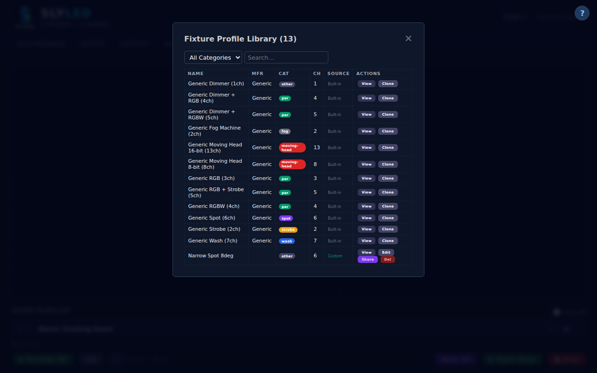
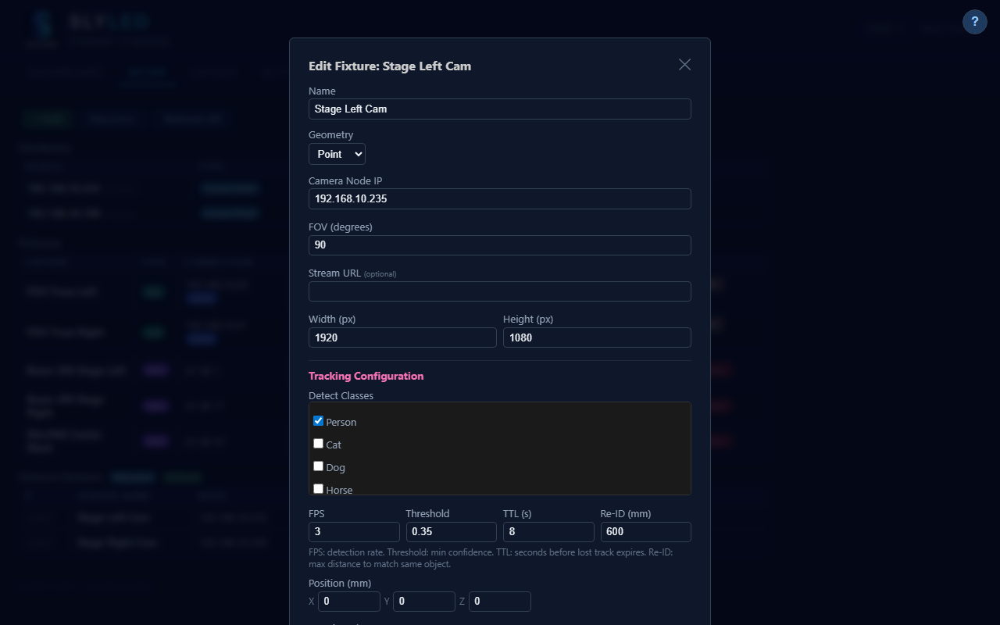

Screenshots


How it works
SlyLED runs YOLOv8n on the camera node itself so detection never leaves your network. The orchestrator converts detected positions into pan/tilt angles and fires Art-Net at 40 Hz.
A USB camera on a Raspberry Pi or Orange Pi captures frames. YOLOv8n runs on-device — no cloud, no latency, no subscription.
A one-time beam-detection calibration links camera coordinates to real-world stage positions. Accuracy within ±5 cm.
SlyLED knows every fixture's position and OFL profile. It converts XYZ coordinates to exact DMX pan/tilt values via inverse kinematics.
40 Hz Art-Net output. Smooth cubic interpolation means heads glide — not snap. Even fast runners stay lit.
Live simulation
This canvas shows what SlyLED sees: four fixtures mounted on a truss, three people walking the stage floor. Each fixture independently locks onto the nearest unassigned person. Assignment resolves in real time as people cross paths.
Every competitor charges thousands for follow-spot automation. SlyLED is free and does more.
Detection runs on the camera node itself. Nothing leaves your network. No API keys, no subscription, no outage risk. Works in a venue with no internet.
SlyLED uses OFL profiles — 700+ fixtures supported. If it has pan and tilt channels, tracking works. No proprietary hardware required.
Legacy follow-spot systems require DMX programming and manual cueing. SlyLED is one click. The show adapts to performers, not the other way around.
Combine tracking with timeline automation, spatial effects, and manual overrides. Tracking is a mode, not a separate system.
Built for shows where the performer is unpredictable — which is every show.
Vocalist moves freely. Spot beams follow them on stage while the rest of the rig runs the programmed show.
Actors hit their marks — or don't. SlyLED tracks wherever they actually are, not where the cue list expected them.
Up to 8 performers tracked simultaneously across the full stage width. No follow-spot operator needed.
Speaker moves around the stage naturally. Clean, professional lighting follows without a technician watching.
Interactive art where the light responds to visitors. 16 object classes — track people, props, even pets.
Affordable enough for school theatre budgets. Full system under $500 in hardware. No licensing fees ever.


Download SlyLED, mount a USB camera, run the calibration wizard. Your moving heads will be tracking performers before the headliner's soundcheck.